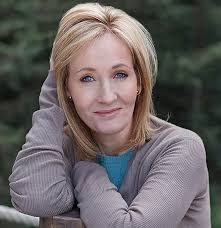

JK Rowling , after receiving an honorary degree from The University of Aberdeen in 2006.
A timeline of an author J. K. Rowling:
- 31 July 1965 - Birth of Joanne Rowling in Yate, Gloucestershire, England.
- 1970 - Rowling attends St Michael’s Primary School.
- 1974 - The Rowling family moves to Church Cottage, Tutshill, Gloucestershire, England. Rowling attends secondary school at Wyedean School and College.
- 1982 - After being rejected for Oxford University, the University of Exeter accepts her for a Bachelor of Arts in French and Classics.
- 1988 - Rowling publishes her short essay “What was the Name of that Nymph Again? or Greek and Roman Studies Recalled” in the University of Exeter’s journal Pegasus.
- July 1990 - On a four-hour-delayed train trip from Manchester to London, the idea for Harry Potter appears into her mind. She starts to write that very same night when she arrives to her flat.
- 1991 - Rowling moves to Porto, Portugal to teach English as a foreign language.
- 16 October 1992 - Joanne Rowling and Jorge Arantes get married on Porto, Portugal.
- December 1993 - Rowling moves to her sister’s, in Edinburgh, Scotland, with her daughter and three chapters of Harry Potter.
- August 1994 - Rowling fills for divorce from Jorge Arantes.
- July 1995 - Rowling finished Harry Potter and the Philosopher’s Stone.
- August 1996 - Bloomsbury Publishing buys the book for an advance of £1,500 (Rowling received £1,250 of this initial payment).
- 27 June 1997 - Harry Potter and the Philosopher’s Stone is published in the United Kingdom by Bloomsbury.
- 2 July 1998 - Harry Potter and the Chamber of Secrets is published in the United Kingdom by Bloomsbury.
- 8 July 1999 - Harry Potter and the Prisoner of Azkaban is published in the United Kingdom by Bloomsbury.
- 8 July 2000 - Harry Potter and the Goblet of Fire is published in the United Kingdom by Bloomsbury.
- 26 December 2001 - Joanne Rowling and Neil Murray get married.
- 23 June 2003 - Harry Potter and the Order of the Phoenix is published in the United Kingdom by Bloomsbury.
- 16 July 2005 - Harry Potter and the Half Blood Prince is published in the United Kingdom by Bloomsbury.
- 21 July 2007 - Harry Potter and the Deathly Hallows is published in the United Kingdom by Bloomsbury.
Read more
If you want to know more about this amazing woman, click one of the links below: